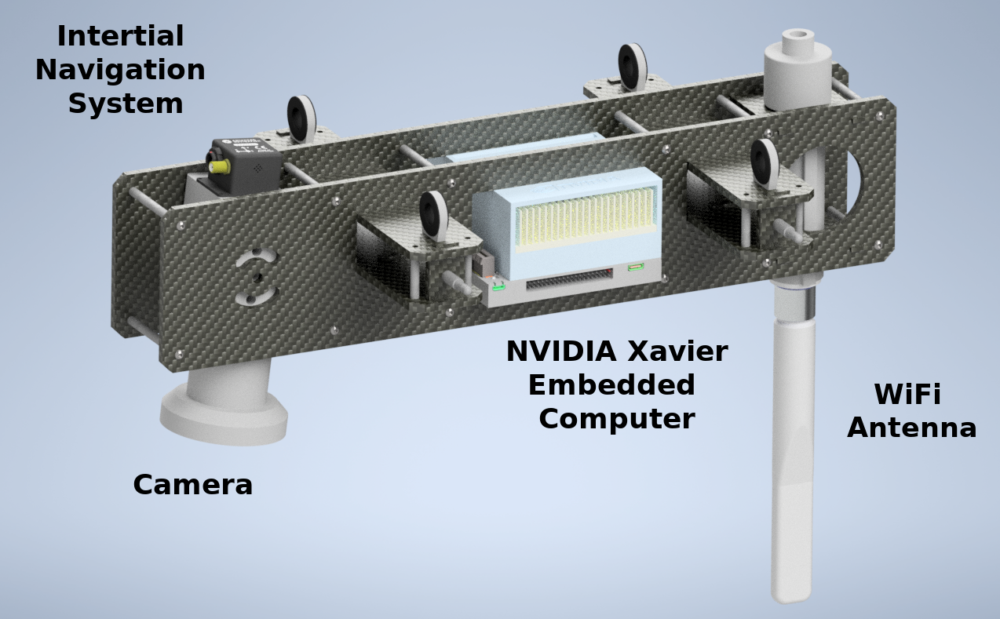
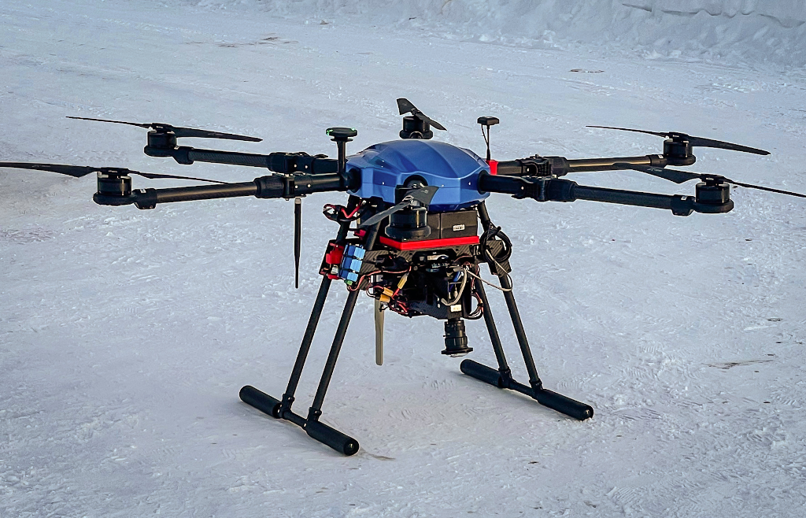
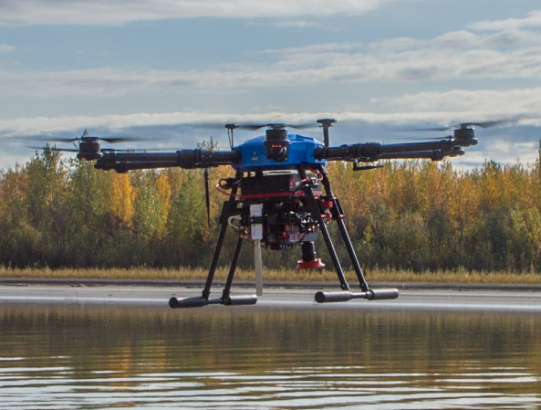
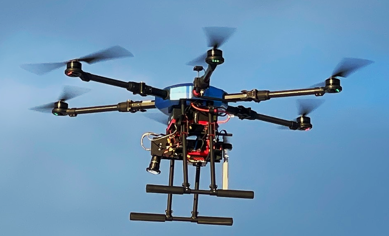

ADAPT Multi-Mission Payload
An open source platform for deploying state of the art deep-neural-network computer vision in real time on small unmanned aircraft systems (sUAS).
Get the source code: https://gitlab.kitware.com/adapt/adapt_ros_ws
 
-
Optimized drone-based collection of imagery and geospatial metadata with live feedback to maintain quality control.
-
Integration with the open source do-it-yourself AI toolkit VIAME to annotate data and train mission-specific image-processing models.
-
Upload your models for aerial deployment with real-time, georegistered analytics wirelessly transmitted to a ground station computer and beyond for rapid dissemination.
-
Commodity hardware components, CAD models, and open-source software allows organizations to cheaply and easily build their own payloads
Real-Time Ground-Station View of Remote Payload Operation
Real-Time Deep Neural Network Ice Segmentation
Frozen Water (Blue) vs. Background (Green)Supports a variety of unique missions
- Sea and River Ice Monitoring
- Monitoring Arctic Mammal Populations
- Person Search and Rescue
- Wild Fire Monitoring
- Coastline Erosion Monitoring
Ongoing work on the ADAPT project is funded by NOAA to support key missions.
Explore
The ADAPT payload source code is hosted here: https://gitlab.kitware.com/adapt/adapt_ros_ws or try the simulator with docker
Events
- Kitware and ACUASI September 2021 data collection in Fairbanks Alaska.
- The 3rd NOAA Workshop on Leveraging AI in Environmental Sciences
Papers / Presentations
-
(2022) National Innovation Center Seminar: Slides
-
(2022) Ocean Sciences Meeting: Slides
-
(2022) 1st International Workshop on Practical Deep Learning in the Wild at AAAI Conference on Artificial Intelligence: Paper
- (2021) The 3rd NOAA Workshop on Leveraging AI in Environmental Sciences: Slides, Recording
 